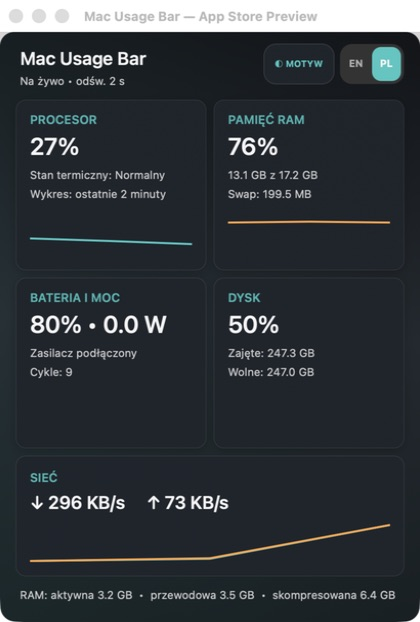

<!doctype html>
<html lang="pl">
<meta charset="utf-8">
<meta name="viewport" content="width=1440, initial-scale=1">
<title>Mac Usage Bar — zrzut do App Store</title>
<style>
  * { box-sizing: border-box; }
  html, body { width: 1440px; height: 900px; margin: 0; overflow: hidden; }
  body {
    color: #f7fbff;
    font-family: -apple-system, BlinkMacSystemFont, "SF Pro Display", sans-serif;
    background:
      radial-gradient(circle at 78% 22%, rgba(52, 210, 202, .24), transparent 29%),
      radial-gradient(circle at 18% 82%, rgba(91, 86, 255, .32), transparent 34%),
      linear-gradient(135deg, #07101f 0%, #10182c 48%, #07151c 100%);
  }
  main { position: relative; display: flex; width: 100%; height: 100%; padding: 86px 94px; }
  .copy { width: 710px; padding-top: 74px; position: relative; z-index: 2; }
  .eyebrow { color: #5fe2db; font-size: 22px; font-weight: 750; letter-spacing: .11em; text-transform: uppercase; }
  h1 { margin: 20px 0 22px; max-width: 650px; font-size: 72px; line-height: 1.02; letter-spacing: -.045em; }
  p { margin: 0; max-width: 590px; color: #c4d0de; font-size: 29px; line-height: 1.32; }
  .features { display: flex; flex-wrap: wrap; gap: 12px; margin-top: 38px; max-width: 610px; }
  .features span { padding: 11px 16px; border: 1px solid rgba(255,255,255,.15); border-radius: 999px; background: rgba(255,255,255,.065); color: #e6edf5; font-size: 18px; font-weight: 620; }
  .shot { position: absolute; top: 50px; right: 98px; width: 540px; height: 800px; object-fit: fill; border-radius: 20px; box-shadow: 0 34px 85px rgba(0,0,0,.55), 0 0 0 1px rgba(255,255,255,.16); }
</style>
<main>
  <section class="copy">
    <div class="eyebrow">Mac Usage Bar</div>
    <h1>Twój Mac.<br>W skrócie.</h1>
    <p>Statystyki systemu na żywo w pasku menu — prywatnie, lekko i zawsze pod ręką.</p>
    <div class="features"><span>CPU i pamięć</span><span>Bateria i moc</span><span>Dysk</span><span>Sieć</span><span>Bez śledzenia</span></div>
  </section>
  
</main>
</html>
